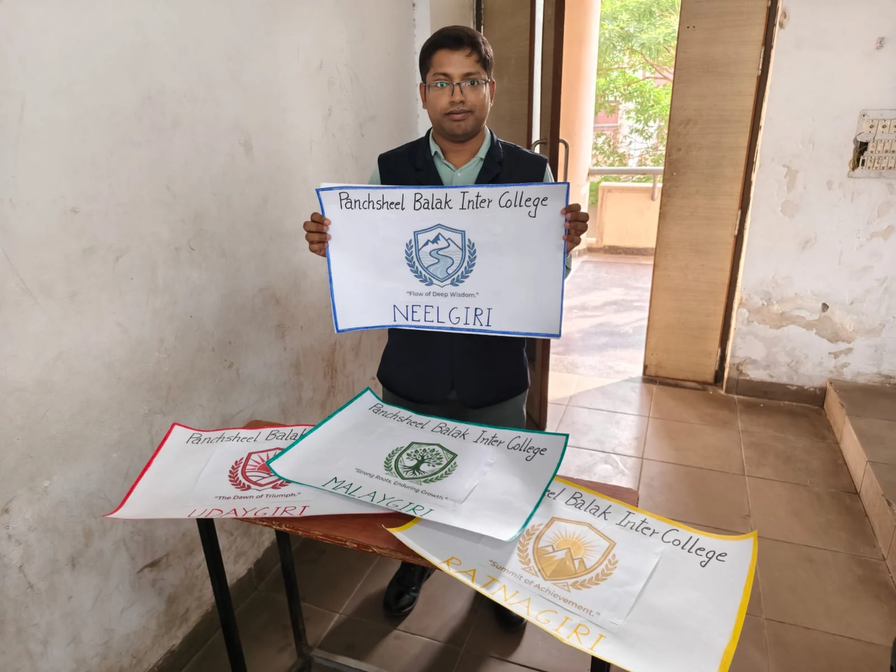
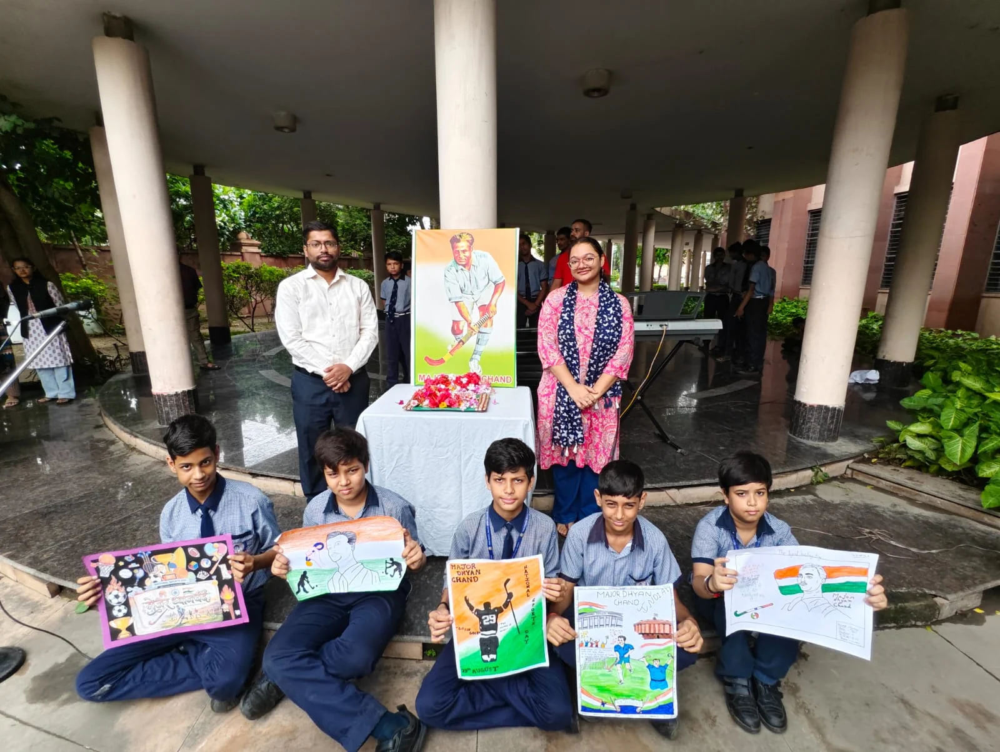
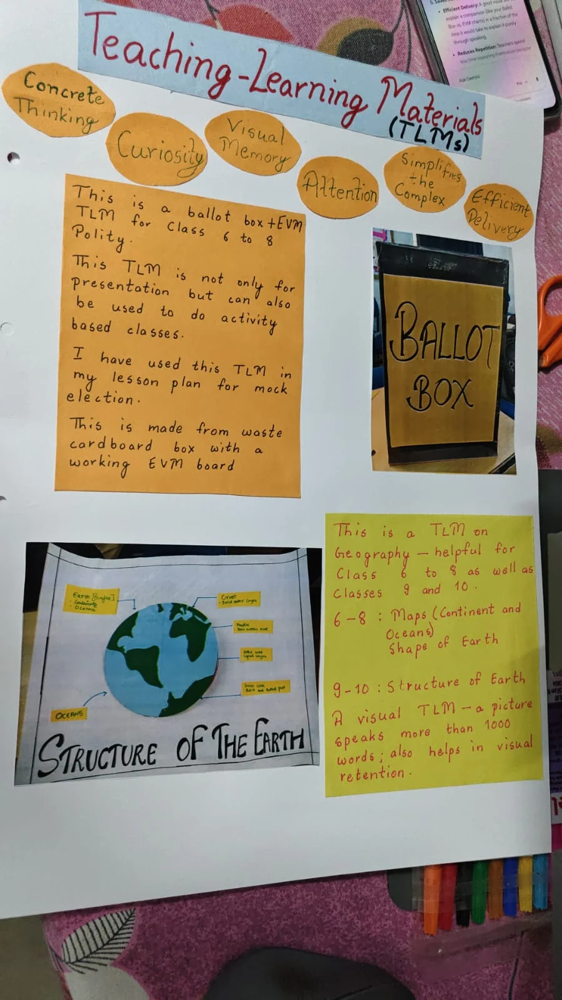

Classroom materials and experiences
Teaching Gallery
Authentic photographs, displays and materials from the published portfolio. Select an image to see it in full.

Ballot box, Earth model and other handmade teaching materials displayed with colleagues.

Illustrated classroom poster covering nomination, campaigning, voting and results.

A classroom display inviting students to choose candidates and cast votes.

A collage of drawing, worksheets and classroom learning at Pehchaan The Street School.

Krishna beside a handmade Independence Day display.


Krishna with Neelgiri, Malaygiri, Udaygiri and Ratnagiri house placards.


Students display their artwork beside a commemorative portrait.


A handwritten record explains the materials, intended classes and classroom uses of the models.